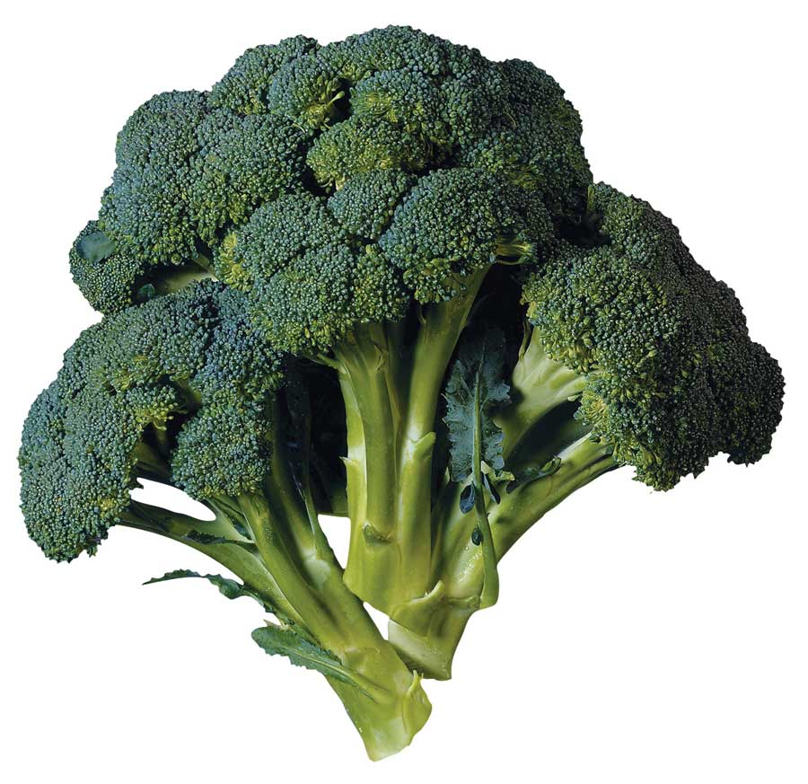

Always a conventional agricultural economist, Agriculture Secretary Earl Butz, serving under Presidents Nixon and Ford, thought organic farming was great - “if we can just figure out which 50 million Americans we want to let starve,” he said.
Organic fared much better under President Jimmy Carter. His USDA secretary, Bob Bergland, was a struggling Minnesota wheat farmer. The few organic farmers Bergland knew of were doing well, and he wanted to know why. Bergland commissioned a scientific study of 69 organic farms in 23 states, with advisers such as Eliot Coleman and the late Robert Rodale. The result was the “Report and Recommendations on Organic Farming,” which is among the most sought-after reports in USDA history to this day.
Despite this enthusiastic support, “alternative agriculture” had to claw its way to legitimacy at the USDA over the next three decades. Maybe that’s why organic advocates groaned when former Iowa Gov. Tom Vilsack was named secretary of agriculture early this year. “Big agribusiness, as usual,” some complained.
Surprise! Vilsack quickly named Kathleen Merrigan, a determined organic champion since the ’80s, as his deputy. Then Vilsack invited nearly two dozen organic advocates to help him plan and plant an organic vegetable garden at USDA headquarters and adopt sustainable landscape practices on the six acres his building occupies alongside the National Mall.
With advice from Merrigan and others, Vilsack tore out a prized parking lot to make room for an organic vegetable garden. Maria Rodale, whose grandfather coined the term “organic farming,” supplied a dump truck load of organic compost. Seed Savers Exchange donated organic heirloom seeds. The list of contributors goes on.
Secretary Vilsack may not be doing everything the organic community would like to see. But the fact that he wants to keep working with his new organic advisers and expand his garden initiative into communities throughout the country - “as a way of promoting healthful, nutritious food and natural resource conservation” - inspires hope for the future of the USDA.
|
 BRAND X PICTURES There may be hope for healthy food: Secretary of Agriculture Tom Vilsack has taken promising steps to promote sustainable farming. |
|
|